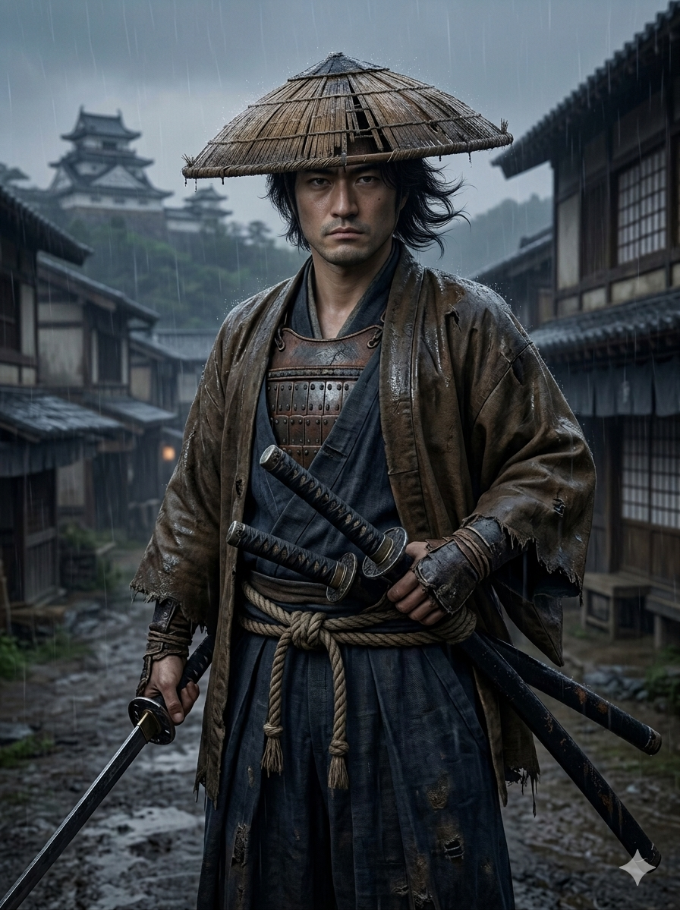
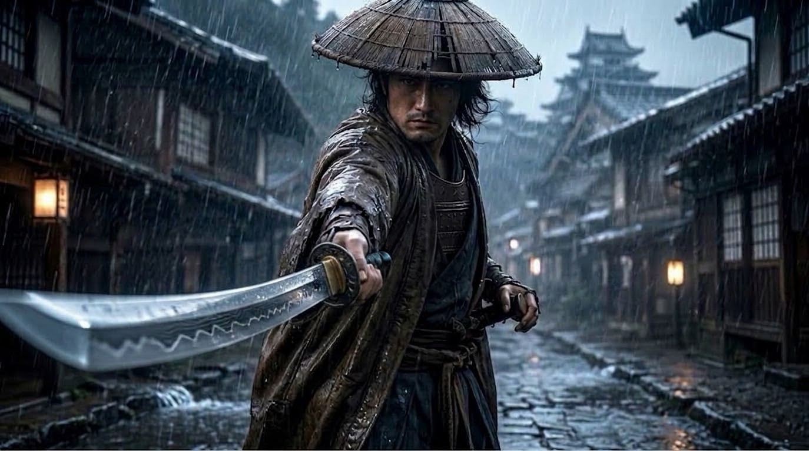

A place for games, art, and small creations
It starts here.
It all comes together here.
Step into a samurai-inspired world. Play a game, explore the artwork, and find a small tool for your desktop.
01 — PLAY
Game
One more round is just a click away. Play in your browser.

SAMURAI SOLITAIRESamurai Solitaire
A solitaire game with a samurai-inspired atmosphere. Take your time, make your move, and begin another round.
Open the game Opens on an external site02 — VISUALS
Art gallery
Rain, steel, and a castle town. Different moments from one samurai world.
Select an image to view it larger.
03 — TOOLS
Gadget
A small tool to keep close on your desktop.
Digital clock widget
A compact clock that displays the time on your Windows desktop or taskbar. Download it as a single file.
Download the widget Windows .cmd file · Run after downloadingABOUT THIS PLACE
More to come.
This is a home for samurai-inspired games, artwork, and small useful tools. New creations will join the atelier as they take shape.